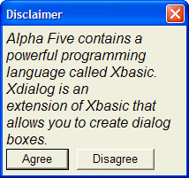
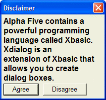

Controlling the Font of Static Text
You can set the font of static text on a dialog using the {font=} command. After changing the font, the size of a character column changes to the new font's representation of a column.
The syntax of the {font=} command is:
{font=fontname, fontsize, style} |
Here is the example from Controlling Word Wrap of Static Text with an additional font statement:
ui_dlg_box("Disclaimer",<<%dlg% {wrap=40} {font=Arial,12,i} Alpha Anywhere contains a powerful programming language called Xbasic. Xdialog is an extension of Xbasic that allows you to create dialog boxes.; {font=Arial,10} <&Agree> <&Disagree> %dlg%) |
The above script creates this dialog:

Lesson 1: Controlling the Font of Static Text
Here is a variation that changes the style of the text:
ui_dlg_box("Disclaimer",<<%dlg% {wrap=40} {font=Arial,12,b} Alpha Anywhere contains a powerful programming language called Xbasic. Xdialog is an extension of Xbasic that allows you to create dialog boxes.; {font=Arial,10} <&Agree> <&Disagree> %dlg%) |

 Note : Multiple {font=} commands can be used in a dialog, and the font of any static text on the dialog is controlled by the most recent {font=} command in the script. However, you cannot change the font within a static text object (for example, changing from Arial to Times Roman). If you try to change the font within a static text object, by including a {font=} command within the static text, Alpha Five will actually begin a new static text object when it encounters the next {font=} command. This will not give you the effect that you want. To change the font within a text object, you need to use Rich Text Font (RTF) objects, which we will discuss later.
Note : Multiple {font=} commands can be used in a dialog, and the font of any static text on the dialog is controlled by the most recent {font=} command in the script. However, you cannot change the font within a static text object (for example, changing from Arial to Times Roman). If you try to change the font within a static text object, by including a {font=} command within the static text, Alpha Five will actually begin a new static text object when it encounters the next {font=} command. This will not give you the effect that you want. To change the font within a text object, you need to use Rich Text Font (RTF) objects, which we will discuss later.
Next
See Also
Rich Text Field Control Syntax
Limitations
Desktop applications only.